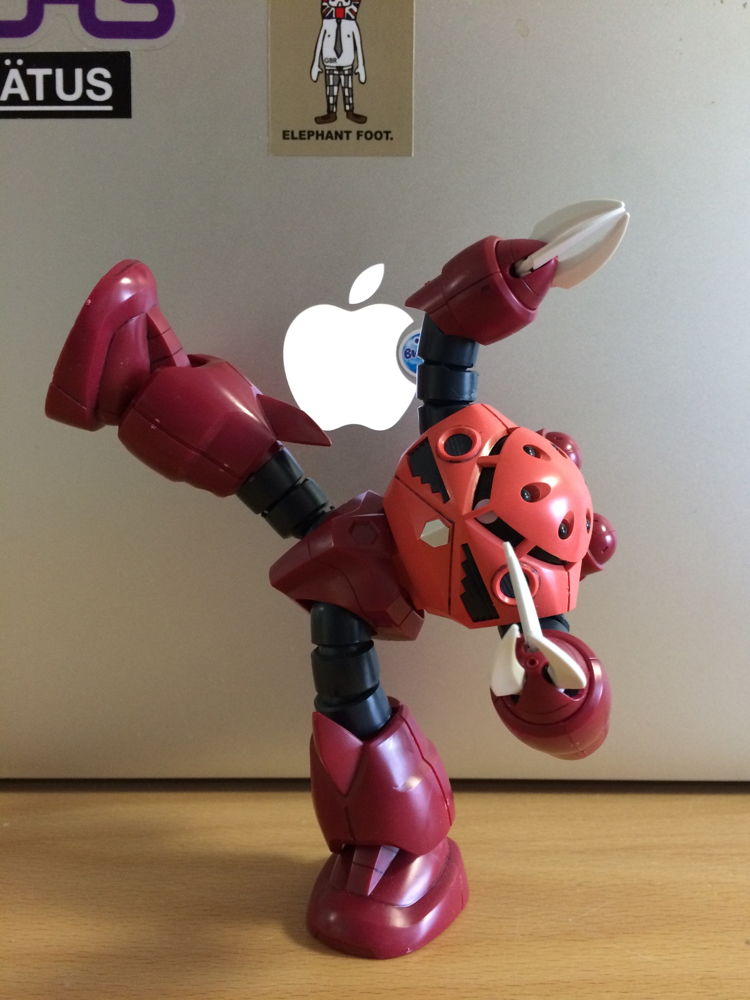

見せてもらおうか
Google検索
の
性能とやらを
Engineering
Life is
Good
アイディアソン
大した話しじゃ有りません。。。

毎日やってますよね
GUNDAM検索
What's
GUNDAM検索
?
つまらない
会議中
嫁さんに
怒られた夜
デバッグ
の合間に
3倍早く
したい時
本日の
GUNDAMキーワード
・がんだむ
・ナイチンゲール
・演説
GUNDAMキーワード1
がんだむ
憶えてキーワード1
が ん だ
GUNDAMキーワード2
ナイチン
ゲール
憶えてキーワード2
ナイチン
GUNDAMキーワード3
演説
敢えて言おう、
カスであると
1日1回
GUNDAM検索